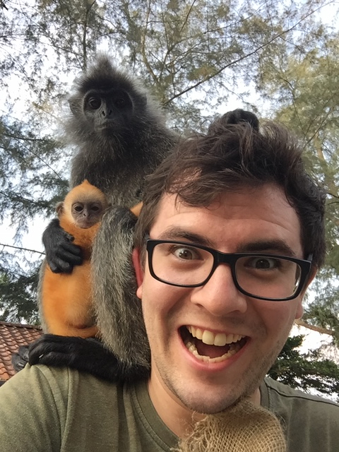
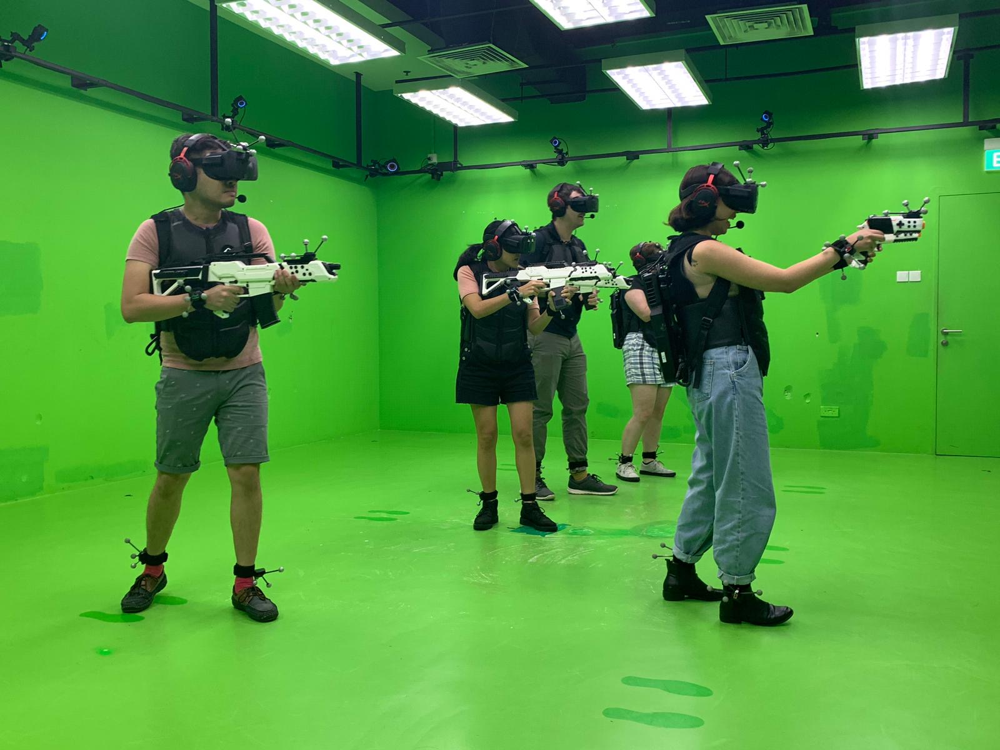

I'm British by birth and hail from Yorkshire in the north of England, known to locals as God's Own County on account of its beautiful countryside. I was also fortunate to spend some of my formative years in Hawke's Bay, New Zealand, where I became a dual citizen, and seeded a passion for nature and travelling.
Outside of work I unwind by playing the piano, hiking, (moaning about) politics, gaming, and the occasional beer or two with friends. Recently, I managed to survive white water rafting in Kuala Kubu Bharu (spending much of the experience underneath the raft). Though an utterly hopeless cook, I'm something of a foodie and love the cuisine of Southeast Asia. I unapologetically share my favourites on Instagram.
Answers to the questions that nobody asked!
My favourite...
† I've been 'strongly advised' not to choose between these...
I climbed Mt. Kinabalu (Borneo) in September 2017, during a moment of temporary fitness.
I am known to some as the Monkey Whisperer.
Taking out the bad guys and crashing into good ones.
{kind=link}
{kind=link}
{kind=link}
{kind=link}
{kind=link}